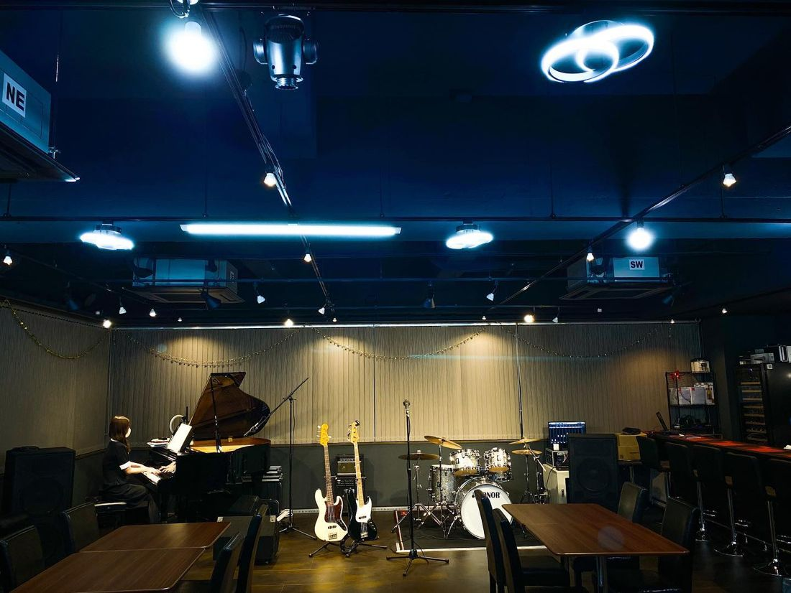
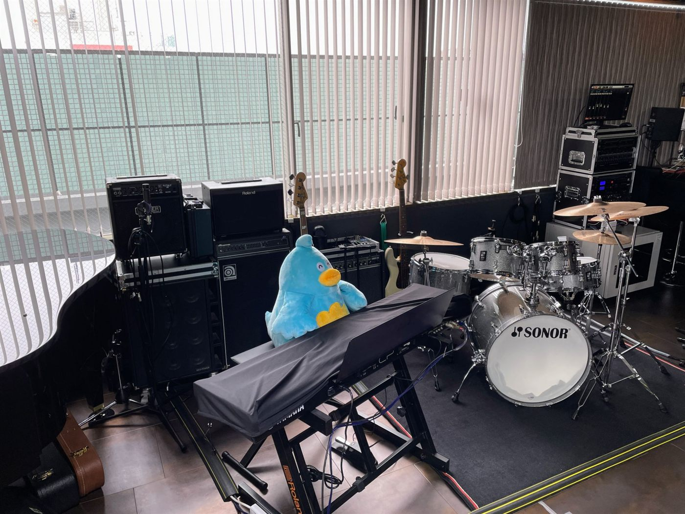
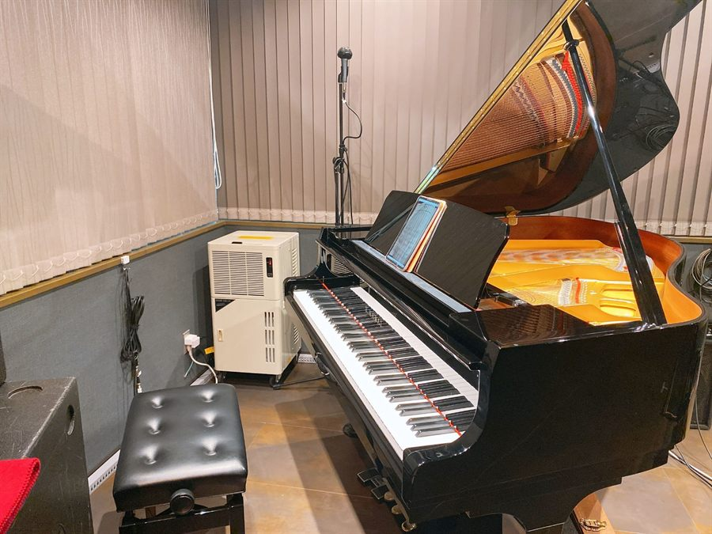
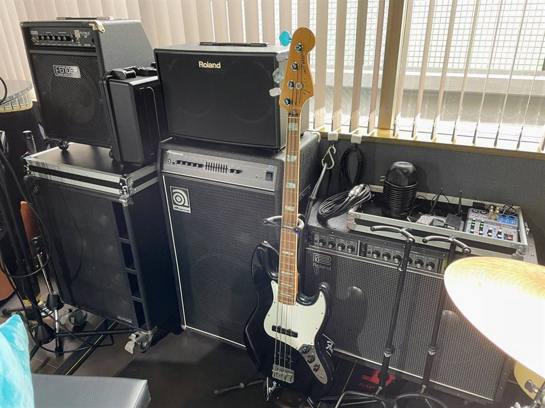
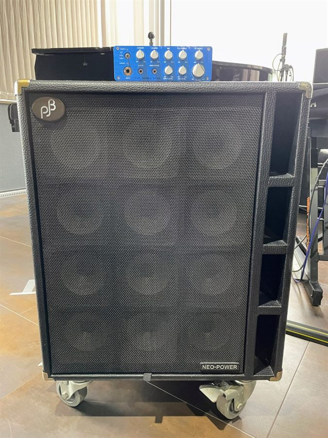
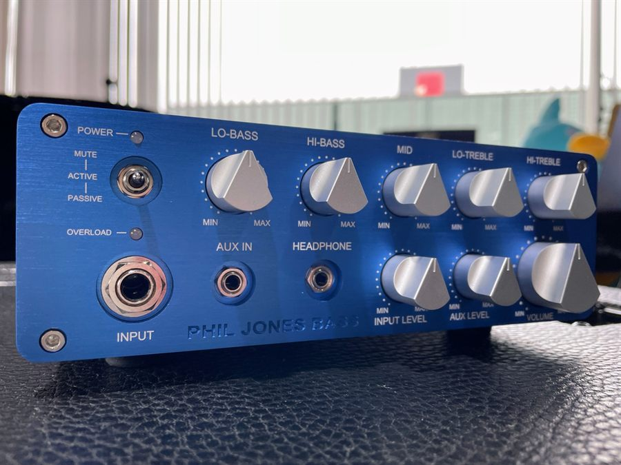

Service & Equipment
店舗について
Service
事業概要
飲食サービスに加え、ライブ・レコーディング・撮影まで対応するスタジオとしてもご利用いただけます。
01
飲食サービス
会員制ダイニングバーの運営
02
ライブ・イベント企画・運営
ブッキングから集客・公演運営まで
03
ライブ・イベント収録・配信
PTZカメラ6台によるマルチカム配信
04
レコーディング
グランドピアノの収録にも対応
05
音楽スタジオレンタル
リハーサル・練習
06
撮影スタジオレンタル
スチール・映像撮影
08
飲食業コンサルティング
［概要：要確認］
Equipment
機材リスト





鍵盤楽器・ドラム
- グランドピアノ（A=441Hz）
- KAWAI GL-10（2021）／YAMAHA CG1（2006）
- ステージピアノ
- YAMAHA CP88（2020）
- エレクトーン
- YAMAHA STAGEA ELS-02C（2014）
- ドラム
- SONOR AQ2 STAGE 22"（2021）＋YAMAHAハードウェア
- シンバル
- ZILDJIAN I Family PRO（14"HH／16"・18"Crash／20"Ride）
- キーボードスタンド
- Roland KS-10Z／PLAYTECH KST80
アンプ
- ギターアンプ
- Roland JC-120G／Roland AC-90
- ベースアンプ
- Phil Jones BP-800＋Neo-Power 12B／Ampeg SVT-450HJ＋SVT-810E／Ampeg B3158／Fender Rumble 30
マイク・スタンド（SHURE SM58 ほか 50本以上）
ダイナミック／コンデンサー／ワイヤレス（SLXD・ULXD・BLX）／ピアノ用ラベリア／測定用 ほか
ミキサー・プロセッサー（Soundcraft Ui24R ×2 ほか）
デジタル48ch CASCADE／アナログミキサー／dbx DriveRack PA2／AFS2／GEQ／パッチベイ／マルチケーブル
PA・モニタースピーカー
CLASSIC PRO CP152E／CP15E／サブウーファー CSX212S ×4／モニター CP15MP・CP12MP／JBL 305P MKII／パワーアンプ
DJ（TRAKTOR KONTROL S8 ほか）
TRAKTOR KONTROL S8／S5／S4 MK2／S2 MK3、PCDJスタンド、RCAミキサー
配信・映像
PTZカメラ FoMaKo FMK20UH ×6／AVer VC520Pro／Blackmagic ATEM Mini Extreme ISO／配信サーバー／50" 4K 歌詞モニター／屋外ビジョン
その他（譜面台・インカム・電源・UPS）
譜面台 ×7／ワイヤレスIEM／インカム ×4／電源制御装置／APC Smart-UPS